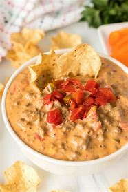

Slow cooker cheese dip

Description
This chessy, creamy dip works for work
potlucks and game day. As a slow cooker
dish this dip is easy to make with little
clean up.
Ingredients
- 1 lbs Ground beef
- 12oz Velveta
- 1 can Rotel tomatoes and chillies
- 1 Pkg Taco Seasoning
Steps
- Brown your ground beef.
- Cut up your Velveta into 1 inch squares.
- Add your ground beef, Rotel, Velveta,
Taco seasoning to a slow cooker.
- Set to low for 6 hours or 3 hours
on high. Stir occasionally until cheese
melts and all Ingredients are
thoroughly combined.
- Serve with your favorite chips.